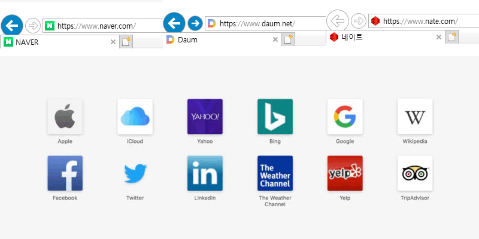
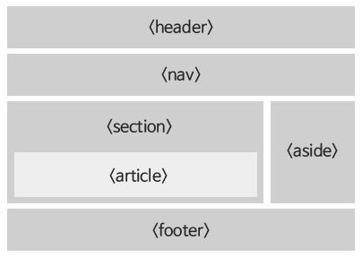
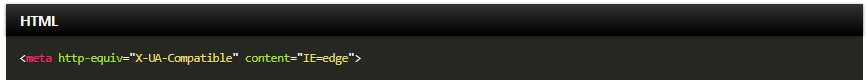
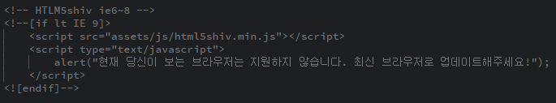
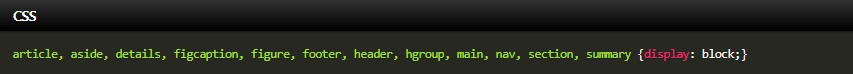
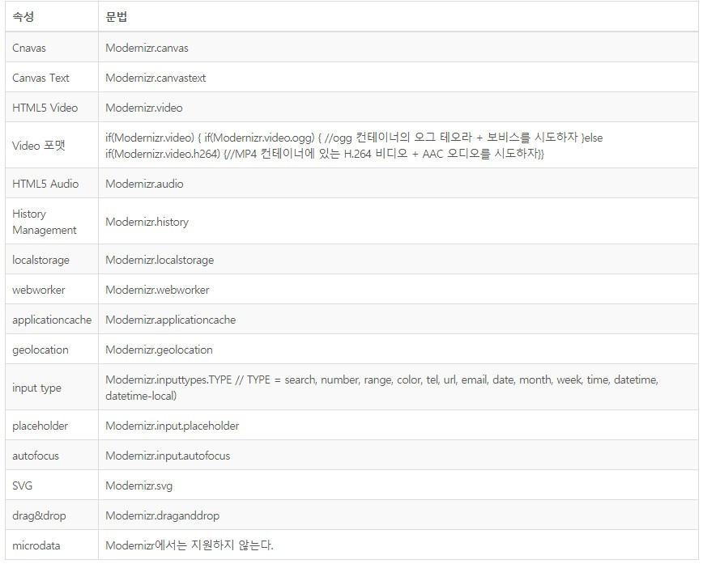

HTML
HTML
HTML(HyperText Markup Language)은 웹 페이지를 만들기 위한 언어입니다.
태그(Tag)
태그는 정보를 정의하는 방식을 의미합니다.
- 태그는 열린 태그와 닫는 태그가 있습니다.
- 닫는 태그에는 '/'가 있어야 합니다.
- 닫는 태그가 필요 없는 태그도 있습니다. (<br />, <hr />, <img />, <meta />)
- HTML5에서는 '/'가 생략이 가능합니다. (<br>, <hr>, <img>, <meta>)
블록 요소 / 인라인 요소
블록 요소는 박스, 인라인 요소는 텍스트를 의미합니다.
- 블록 엘리먼트 (Block Element)
- 독립된 박스 영역으로, 한 줄에 하나의 블록 요소를 표현할 수 있습니다.
- 블록 요소와 인라인 요소를 포함 할 수 있습니다.
- <div>, <p>, <dh1~h6>, <ul>, <li>
- 인라인 엘리먼트 (Inline Element)
- 독립된 텍스트 영역으로, 한 줄에 여러 개의 인라인 요소를 표현 할 수 있습니다.
- 인라인 요소에는 블록 요소가 포함될 수 없지만, 인라인 요소는 포함 할 수 있습니다.
- <span>, <a>, <strong>, <em>, <img>

파비콘
파비콘은 웹페이지에 접속했을때, 상단 탭에 보여지는 아이콘을 일컫습니다.
- 생성방법
- icoconvert go
- 사이즈는 16X16, 32X32, 48X48, 64X64
- 지원 파일은 .ico / .png / .jpg / .gif
- 사용방법
- <head> 와 </head> 사이에 <link rel="shortcut icon" href="favicon.ico" /> 넣어서 사용
- 작업이 완료되면 브라우저 리프레쉬를 하여 확인하면 되지만, 보이지 않을 경우 브라우저 캐시를 지우면 됩니다.

DTD(Document Type Declearation) 선언
웹 페이지를 제작하기 위해서는 웹 문서 형식 유형을 설정하여야 합니다.
독타입을 설정하지 않거나 잘못 설정하면 브라우저에 따라 화면이 다르게 나오거나 랜더링이 달라지기 때문에 독타입을 설정해야 합니다.
<!-- html5 -->
<!DOCTYPE html>
<!-- HTML 4.01 Strict -->
<!DOCTYPE HTML PUBLIC "-//W3C//DTD HTML 4.01//EN" "http://www.w3.org/TR/html4/strict.dtd">
<!-- HTML 4.01 Transitional -->
<!DOCTYPE HTML PUBLIC "-//W3C//DTD HTML 4.01 Transitional//EN" "http://www.w3.org/TR/html4/loose.dtd">
<!-- HTML 4.01 Frameset -->
<!DOCTYPE HTML PUBLIC "-//W3C//DTD HTML 4.01 Frameset//EN" "http://www.w3.org/TR/html4/frameset.dtd">
<!-- XHTML 1.0 Strict -->
<!DOCTYPE html PUBLIC "-//W3C//DTD XHTML 1.0 Strict//EN" "http://www.w3.org/TR/xhtml1/DTD/xhtml1-strict.dtd">
<!-- XHTML 1.0 Transitional -->
<!DOCTYPE html PUBLIC "-//W3C//DTD XHTML 1.0 Transitional//EN" "http://www.w3.org/TR/xhtml1/DTD/xhtml1-transitional.dtd">
<!-- XHTML 1.0 Frameset -->
<!DOCTYPE html PUBLIC "-//W3C//DTD XHTML 1.0 Frameset//EN" "http://www.w3.org/TR/xhtml1/DTD/xhtml1-frameset.dtd">
언어 속성 설정
컨텐츠의 언어를 인식하고 얻은 정보를 추출하는데 사용합니다.
<!-- html5 -->
<html lang="ko">
<!-- html4 -->
<html lang="ko" xml:lang="ko" xmlns="//www.w3.org/1999/xhtml">
메타 데이터 설정
웹 사이트에 대한 여러가지 정보를 제공합니다.
| 메타 데이터 |
설명 |
| charset |
웹 페이지 언어 설정 |
| author |
웹 페이지를 만든 사람 |
| description |
웹 페이지에 대한 서령 |
| keywords |
웹 페이지에 대한 키워드 |
| generatior |
웹 페이지를 만든 소프트웨어의 이름 |
<meta charset="UTF-8">
<meta name="author" content="지성재성">
<meta name="description" content="웹 표준을준수한 사이트 만들기 예제입니다.">
<meta name="keywords" content="웹표준, 웹접근성, 웹사이트만들기">
<meta name="generator" content="sublime text">
특수문자(엔티티코드)
HTML에 본무에 바로 쓸 수 있는 특수 문자입니다.
| 문자 |
이스케이핑 |
| < |
< |
| > |
> |
| & |
& |
| 공백 |
|
| " |
" |
| “ |
“ |
| ” |
” |
| « |
« |
| » |
» |
| | |
| |
| © |
© |
| ← |
← |
| → |
→ |
HTML Refence
<div>
블록 요소로 영역을 구분짓거나 무리지어주는 엘리먼트입니다.(자기자신을 중첩가능)
- id, class - id는 하나의 id당 하나만 적용, class는 하나의 class를 여러 태그에 적용
- style - CSS의 속성들을 HTML 문서 내에서 태그에 직접 설정할 때 쓰이는 속성
<a>
외부 대상 위치로 이동하거나 페이지 내부 대상 위치로 이동하는 엘리먼트입니다.
<b>
텍스트를 중요성과 관련성을 전달하지 않고 구별 할때 사용합니다.
<em>
텍스트를 강조하고 싶을 때 사용합니다.
<i>
텍스트를 노멀한 글자와 구분하기 하고 싶을 때 사용합니다.
<mark>
형광펜으로 그어 놓은 듯한 효과를 냅니다.
<ins>
텍스트 하단에 밑줄을 넣고 싶을 때 사용합니다.
<sup>
텍스트 위에 첨자를 넣고 싶을 때 사용합니다.
<sub>
텍스트 아래에 첨자를 넣고 싶을 때 사용합니다.
<del>
텍스트 중앙에 선을 넣고 싶을 때 사용합니다.
<small>
텍스트를 한단계 작게 넣고 싶을 때 사용합니다.
<big>
텍스트를 한단계 크게 넣고 싶을때 사용합니다.
<span>
인라인 요소로 자신만으로는 아무런 의미를 갖지 않는 엘리먼트입니다.(자기자신을 중첩가능)
- display: - diplay요소 변경
- width: - 가로크기
- height: - 세로크기
- background-color: - 배경색 변경
- color: - 글자 색 변경
- font-style: - 글자 형식 변경
- margin: - 외부 여백설정
- padding: - 내부 여백설정
- border: - 테두리 설정
<strong>
브라우저에서 굵은 글씨체로 표시 되는 엘리먼트입니다.
<b>태그와<strong>태그는 글자를 진하게 만들어주는 태그로 서로 차이점은 없습니다.
<pre>
형식화된 텍스트의 블럭을 나타냅니다.
- <pre> 태그로 감싼 문장은 입력한 문장 형태 그대로 브라우저에 표현할 수 있습니다.
- 공백을 그대로 표현하기 때문에 소스상에서 문장의 시작은 공백없이 시작해야 합니다.
- 영역 끝에서 자동 줄바꿈이 되도록 하려면 style에 word-wrap: break-word;를 추가하면 됩니다.
<table>
1차원 이상의 데이터를 표의 형태로 나타냅니다.
- tr : - row (횡렬의 셀)로 정의
- th : - column (종렬의 셀)으로 제목셀을 정의
- td : - cell (표안의 항목)로 데이터셀을 정의
- caption : - 표의 제목을 정의
- thead : - 헤더행을 그룹화하여 정의
- tfoot : - 푸터행을 그룹화하여 정의
- tbody : - 본체행을 그룹화하여 정의
- col : - 열의 속성값과 스타일을 위한 그룹화
- colgroup : - 열의 구조적 그룹화. col요소를 포함할 수 있다.
<h1>~<h6>
각 섹션의 제목을 나타냅니다.
- h1요소가 가장 높은 등급이고, h6요소가 가장 낮은 등급입니다.
- 계층 구조에 맞게 순서대로 작성되어지는것이 좋습니다 (<h1> 다음에 <h2> 가 오는것이 좋습니다. )
- 원칙적으로 h1요소는 하나의 문서에 한번만 지정하는 것이 좋습니다.
- 잘 사용하면 검색 엔진의 정보 인식성을 높일 수 있습니다.
<section>
일반적으로 문서의 컨텐츠 영역을 의미합니다.
- 컨텐츠와 관련된 한 가지 주제 영역을 말합니다.
- section 태그는 문장이나 스타일링 요소가 아니기 때문에 편의성이나 영역을 위함이면 div태그가 좋습니다.
- section 태그는 제목이 없는이 없는 경우는 ㄴ섹션이라고 할 수 없기 때문에 제목을 제공해야 합니다.
- section 태그는 일반적인 주제가 아니라면 구체적인 요소(article, aside, nav)를 사용하는 것이 더 적절합니다.
- section 태그 안에는 또 다른 section 태그를 넣을 수 있습니다.
<article>
컨텐츠의 독립적인 항목을 나타내는 컨텐츠를의미합니다.
- article는 신문기사, 잡지, 블로그의 항목, 게시판 글 등의 독립적인 항목을 나타냅니다.
- section은 하나의 주제를 나타낸다면, article 주제를 묶은 독립적인 콘텐츠입니다.
- section 요소 안에는 article 요소를 쓸 수 있으며, article 요소 안에도 section 요소를 쓸 수 있습니다.
<aside>
웹 문서의 메인 콘텐츠에 영향을 미치지 않는 사이드 콘텐츠 영역을 의미합니다.
- aside는 메인 컨텐츠와 관련된 사이드 정보, 광고, 등 부분적인 정보를 그룹화할 때 사용합니다.
<nav>
페이지 내에서 이동할 수 있는 네비게이션 링크 그룹입니다.
- nav는 문서의 핵심적인 페이지의 메뉴 및 서브 메뉴에서 사용하고 문서에서 주로 한번만 사용합니다.
- 문서 안에 링크가 포함된 컨텐츠는 nav를 사용하지 않습니다.
- nav는 핵심적인 네비게이션에 사용해야 하므로, 푸터 내에 링크 그룹의 사용은 적절하지 않습니다.
<main>
웹 문서의 주요 컨텐츠영역을 나타낼 때 사용합니다.
- main은 웹 페이지에서 한번만 사용할 수 있으며, 접근성과 검색영역 노출을 향상시킵니다.
- article, aside, footer, header, nav를 하위 요소로 사용할 수 있습니다.
<header>
웹 문서의 헤더 영역을 나타냅니다.
- 헤더에는 웹 페이지에 대한 소개, 네이게이션 영역, 테이블 영역, 검색영역, 로고 영역을 포함하는 영역입니다.
- 헤더에는 제목태그가 포함될 수 있으며, 필수 조건은 아닙니다.
- header는 섹션 컨텐츠가 아닌 그룹화하기 위한 요소이므로 section 요소를 포함 할 수 없습니다.
<footer>
웹 문서의 푸터 영역을 나타냅니다.
- footer는 저작권 정보, 회사성보, 관련 링크, 주소, 바닥글, 사이트 정보 등을 포함하는 컨텐츠 영역입니다.
- footer는 섹션 컨텐츠가 아닌 그룹을 나타내는 요소이며, section, article, aside 등을 포함 할 수 있습니다.
<HTML5 태그에서 새로 생긴 태그>
dialog, figure, mark, time, meter, progress, ruby
- dialog - 대화를 의미있는 콘텐츠로 만들고자 할때 사용하며 dt에 말하는 사람 dd에 내용을 작성한다.
- figure - 이미지, 그래프, 사진, 예제코드, 비디오, 일반 텍스트등을 하나로 묶어 블록을 형성하고 캡션을 포함 시켜 서로의 관계를 명확히 구조화 시킨다.
- mark - 형광펜으로 특정단어들을 칠해서 강조하는 효과와 비슷하며 문장내의 중요한 부분에 강조효과를 넣는 em, strong과는 다른 개념이다. 시각적 주목효과만을 노리며 스타일이 정의되어 있지 않으므로 직접 효과를 작성한다.
- time - 날짜와 시간을 기계가 이해할 수 있게 명확하게 인코딩하면서도 사람도 이해할 수 있게 노출시킨다. YYYY-MM-DD(날짜) / HH:MM:SS(24시의 형태)로 표기하고 동시에 나타낼 경우, 2013-01-30T12:00:00+09:00 와 같이 T문자로 구분하고 문자열 끝에 타임존 정보를 더하면 된다.
- meter - 통화, 인구, 점수, 치수와 같은 숫자들과 같이 특정 범위내에 있는 숫자 값을 시스템에 인지시킬 필요가 있을 때 사용할 수 있다.
- value - 실제로 측정된 진짜 데이터를 지정한다.
- title - 튤팁 입력을 할 수 있다.
- high - 입력된 데이터들 중의 사용자가 허용할 수 있는 최대값을 지정한다.
- low - 입력된 데이터들 중의 사용자가 허용할 수 있는 최저값을 지정한다.
- max - meter에서 인식할 수 있는 최고 값을 지정한다.
- min - meter에서 인식할 수 있는 최저값을 지정한다.
- optimum - 최적의 측정값을 지정해 준다.min으로 설정된 최저값과 max로 설정된 최대값 사이에서 가능한 한 최고 적합한 값을 지정해준다.
- progress - 다운로드 진척 상태를 알려줄때 유용하게 사용할 수 있는 태그로 최대값 max속성과 현재 다운로드한 값 value속성을 가진다. 이는 자바스크립트와 연동하여 동적으로 다운로드상태를 제공할 수 있다.
- ruby
- 한자, 일어등의 발음들을 표기하기 위해 사용하며 rp와 rt를 사용한다. 5.5pt의 작은 글씨를 사용해 첨언을 넣는 영국출판문화에서 기원한 단어
- rp는 루비의 앞뒤로 붙게되는 괄호등을 지정하고 지원 브라우저에서는 보이지 않는다.
<HTML5 태그에서 없어진 태그>
- applet - 자바 애플릿 삽입
- acronym - 약어나 이니셜 표시
- dir - 디렉토리 내용 표시
- frame - 프레임
- frameset - 프레임 세트
- noframes - 프레임에 대응하지 않는 브라우저를 위한 컨텐츠
- isindex - 서버로 송신하는 텍스트 입력란
- listing, xmp - 내용 그대로 출력
- noembed - embed를 사용할 수 없을 때 대체 요소
- rb - 루비 대상 문자열을 지정
- basefont - 기본 폰트 지정
- big - 텍스트 사이즈를 크게 함
- blink - 문자를 점멸
- center - 내용을 가운데 정렬함
- font - 폰트 지정
- marquee - 문자를 스크롤
- s - 취소선
- spacer - 스페이스 삽입
- strike - 취소선
- tt - 글꼴을 같은 폭으로 표시
- u - 텍스트에 밑줄을 그음
- bgsound - 배경음 삽입
<HTML5 태그에서 의미가 변경된 태그>
- HTML5의 DTD 선언 - !DOCTYPE html
- HTML5의 인코딩 선언 - meta charset = "utf-8"
- hr - 원래 단순한 가로줄을 나타내는 태그 였으나, 페이지의 주제가 바뀔 때 내용을 분리시키는 의미가 HTML5에서 추가되었다.
- u - 양식상 일반적인 텍스트보다 돋보여야 할 때 쓴다. 예를 들어 철자가 틀린 단어나, 중국어로 번역된 고유 명사등이 있다. 별도의 CSS없이 쓰면 브라우저에서는 밑줄을 긋는 것이 기본값이다.
- i -어떠한 이유로 일반적인 텍스트보다 돋보여야 할 때 쓴다. 예를 들어 전문 용어, 외국어의 구절등이 있다. 별도의 CSS없이 쓰면 브라우저에서는 이태릭체로 표기하는 것이 기본 값이다.
- s - 더이상 옳지 않은 내용을 나타내는 데에 쓴다. 별도의 CSS없이 쓰면 브라우저에서는 취소선을 긋는 것이 기본값이다. 더 적절한 시맨틱 태그가 있을 경우 그쪽을 쓴다.
- strong- HTML4에서는 강한 강조를 의미했지만, HTML5에서는 중요성으로 의미가 변경되었다.
<시멘틱 태그>
시맨틱(Semantic)은 "의미의, 의미론적인"이라는 뜻이다.
즉, HTML5에 도입된 시맨틱 태그는 개발자와 브라우저에게 의미있는 태그를 제공하게 된다.
- header - 문서의 header를 나타낼 때 사용하고, 사이트 로고, 글로벌 링크(회원가입, 언어셋 등), 소개 등을 넣습니다.
- nav - 문서의 navigation을 나타낼 때 사용하고, 보통 메뉴 영역으로 사용합니다.
- aside - 문서의 aside를 나타낼 때 사용하고, 좌측이나 우측 영역으로 사용합니다.
- section - 문서의 section을 의미하며, 같은 성격의 내용일 때 section으로 묶어 사용합니다.
- article - section 태그의 하위 개념으로 분류되며 뉴스 기사나 블로그 글 같은 독립적인 내용이 들어갑니다.
- footer - 내부에는 footer가 올 수 있는데, 이 때 사용되는 태그는 해당 영역에 대한 꼬리말로 사용됩니다.
- main - 문서의 주가 되는 컨텐츠를 정의 하는데 쓰이면 aside, section, article을 포함하여 자주 사용됩니다.
- mark - 내부에 참조나 하이라이트 표시를 필요로 하는 문자를 정의를 할때 사용됩니다.
- details - 사용자가 보거나 숨길 수 있는 추가적인 세부 정보를 정의 할때 사용됩니다.
- figcation - 설명(자막)에 대한 정의를 내릴때 사용됩니다.
- summary - 문서의 details에 대한 보이는 요소를 정의할 때 사용됩니다.
- time - 문서의 날짜/시간 정의할 때 사용됩니다.

<X-UA-Compatible, IE=edge (호환성 보기)>
호환성 보기 버튼은 IE8이 웹페이지에 접근했을때, 어떤 렌더링 엔진을 사용할 것인지를 선택하게 하는 용도의 버튼입니다.
호환성 보기 버튼을 클릭함으로써, 웹표준을 지키지 않던 브라우저의 렌더링 방식(관용모드)으로 작동하게 됩니다.
- IE=5 : 관용모드(quirks mode)로 지정된 DOCTYPE에 상관없이 IE5 렌더링 방식이 사용됩니다.
- IE=7 : IE7 표준모드로 지정된 DOCTYPE에 상관없이 IE7 표준 모드 렌더링 방식이 사용됩니다.
- IE=EmulateIE7 : IE7 에뮬레이션 모드로 지정된 DOCTYPE에 따라 IE7 표준모드나 관용모드로 렌더링됩니다.
- IE=8 : IE8 표준모드로 지정된 DOCTYPE에 상관없이 IE8 표준모드로 렌더링됩니다.
- IE=EmulateIE8 : IE8 에뮬레이션 모드로 지정된 DOCTYPE에 따라 IE8 표준모드나 관용모드로 렌더링됩니다.
- IE=edge : 최신모드로 지정된 DOCTYPE에 상관없이 IE8 이상 버전에서 항상 최신 표준 모드로 렌더링됩니다.
- content="IE=edge,chrome=1" 처럼 대체 방법으로 크롬 프레임이라는 ActiveX를 설치하라는 것을 추천했는데 크롬 프레임의 개발 종료로 이제 더 이상 추천하지 않습니다.

<HTML5shiv>
새로운 HTML5 섹셔닝 요소를 이전 버전의 IE6~9, Safari 4.x(iPhone 3.x)와 Firefox 3.x 에서도 작동하도록 해주는 라이브러리입니다.
- HTML5Shiv는 head 태그 안에 배치됩니다.
- 만일 Modernizr를 사용한다면 html5shiv를 코어에 포함시킬 수 있습니다.

- 이 코드를 사용한 경우 CSS에서 해당 블럭요소들을 display:block 해주어야 합니다.

<Modernizr (브라우저 기능검사)>
Modernizr는 오픈소스 자바스크립트 라이브러리로,
HTML5와 CSS3의 명세에 정의된 요소와 속성들에 대한 지원여부를 점검하는 방식으로 기존의 방식보다 더 정확한 분류가 가능합니다.
1.Modernizr 소개
- 40개 이상의 신규 요소와 속성들을 테스트할 수 있다. 웹문서에 Modernizr 스크립트를 포함하면,
현재 브라우저가 CSS3(@font-face, border-radius, border-image, box-shadow, rgba() 등) 뿐만 아니라 HTML5의 기능(audio, video, localStorage,
새로 추가된 input 엘리먼트의 types과 attributes)에 대해서도 지원하는 정도를 점검할 수 있습니다.
- Modernizr라는 자바스크립트 객체를 생성하여 boolean(true,false) 속성으로 지원여부를 판단
- html 요소에 어떤 요소와 속성들이 지원되고 지원되지 않는지 클래스 값을 이용해 표현
- 제공하는 script loader를 사용하여 구형 브라우저에 polyfill를 제공할 수 있습니다.(html5 Shiv)
- Modernizr는 점진적인 기능개선 원칙하에 개발되었기 때문에, 웹사이트를 자바스크립트를 전혀 사용하지
않는 경우에서부터 기능개선을 위해서 단계별로 레이어를 추가할 수 있도록 지원합니다.
2.Modernizr 브라우저 지원
- IE6+, Firefox 3.5+, Opera 9.6+, Safari 2+, Chrome
- mobile, iOS's mobile Safari, Android's WebKit browser, Opera Mobile, Firefox Mobile and whilst we’re still doing more testing we believe we support Blackberry 6+
3.Modernizr 사용법
- Development : 개발 버전이기 때문에 Non-core detects와 Media Queries를 제외한 모든 것을 포함하고 있다.
압축되지 않아 Modernizr 코드를 살펴 볼 수 있다. 테스트 용도에서 많이 사용합니다.
- Production : 실제 서비스 단계에서 사용하는 것으로 지원 여부를 확인해야 하는 항목들만 선택할 수 있다. 압축되어 있습니다.
- html5shiv - IE 6~9, 사파리 4.x(아이폰 3.x 폼함), 파이어폭스 3.x 브라우저에서 HTML5의
디폴트 스타일을 적용할 수 있게 해주고 특히 레거시 IE에서 HTML5의 section 요소들을 사용할 수 있게 해 주는 툴입니다.
- html5shiv w/ printshiv - 프린트를 해야할 필요가 있을 때 이 옵션을 선택해야 합니다.
- Modernizr.load - Monernizr.load는 pollyfill을 이용한다면 대역폭과 성능을 향상시키는데 도움이 됩니다.
- Media Queries - respond.js를 인클루드하며 CSS3 Medial Queries 기능을 사용할 수 있다. 이것은 Modernizr 없이도 사용할 수 있습니다.
- Add CSS Classes - 요소에 클래스를 추가해서 지원하는 CSS3 속성들을 알수 있게 한다.
4.Modernizr 삽입
<head>
<link rel="stylesheet" href="css/main.css" />
<script src="js/modernizr-2.6.2.min.js"></script>
</head>
* 성능적인 측면에서 스타일시트 다음에 위치하는 것이 추천합니다.
5.Modernizr를 이용한 감지
if(Modernizr.canvas) {
//canvas supported } else {
//canvas not supported
}
